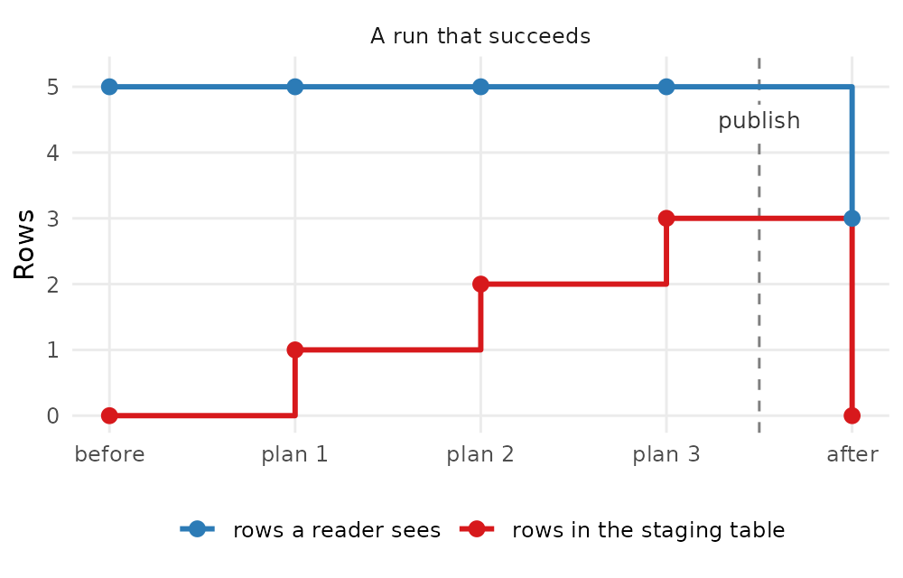

Rebuilding a table safely
Source:vignettes/rebuilding-a-table-safely.Rmd
rebuilding-a-table-safely.RmdA task often rebuilds its output table: plan 1 empties the table, and each plan then adds its rows. cs9 keeps every change in a staging table until the last plan succeeds. It then copies the changes into the table in one step. A reader therefore sees the complete old table or the complete new table, never a part of one.
cs9 stages a run only when the run has a run_key. A
scheduler can pass one to run_task(). A run without a
run_key writes to the table at once, as before.
This vignette runs a small task against SQLite and draws what a
reader sees. A chunk calls stopifnot() on each claim, so
the vignette fails to build when cs9 stops keeping it.
The task
The table holds counts per week. Before the run it holds 5 old rows,
with n = 0. The task rebuilds it with 3 plans, one per
week. Plan 1 empties the table, and each plan adds the row of its
week.
library(data.table)
db_dir <- file.path(tempdir(), "cs9-rebuilding")
unlink(db_dir, recursive = TRUE)
dir.create(db_dir)
Sys.setenv(
CS9_AUTO = "0",
CS9_PATH = db_dir,
CS9_DBCONFIG_ACCESS = "config/anon",
CS9_DBCONFIG_DRIVER = "SQLite",
CS9_DBCONFIG_DB_CONFIG = file.path(db_dir, "config.sqlite"),
CS9_DBCONFIG_DB_ANON = file.path(db_dir, "anon.sqlite")
)
cs9::reload_db_config()
ss <- cs9::SurveillanceSystem_v9$new(name = "rebuild")
ss$add_table(
name_access = "anon",
name_grouping = "rebuild",
name_variant = "counts",
field_types = c(week = "INTEGER", n = "INTEGER"),
keys = "week"
)
counts <- ss$tables$anon_rebuild_counts
counts$insert_data(data.table(week = 1:5, n = 0L))After it writes, the action records two numbers. One is the rows that
a reader sees in the table. The other is the rows that wait in the
staging table. staged_tbl() reads the rows that the run
staged.
records <- list()
attempt <- "none"
fail_week <- 0L
record <- function(step, published, staged) {
records[[length(records) + 1L]] <<- data.table(
attempt = attempt, step = step, published = published, staged = staged
)
}
rebuild_data <- function(argset, tables) {
return(list())
}
rebuild_action <- function(data, argset, tables) {
if (argset$first_analysis) {
tables$counts$drop_all_rows()
}
tables$counts$insert_data(data.table(week = argset$week, n = 10L * argset$week))
record(
step = paste("plan", argset$week),
published = tables$counts$nrow(),
staged = nrow(dplyr::collect(tables$counts$staged_tbl()))
)
if (argset$week == fail_week) {
stop("week ", argset$week, " failed")
}
}
ss$add_task(
name_grouping = "rebuild",
name_action = "counts",
for_each_plan = plnr::expand_list(week = 1:3),
data_selector_fn_name = "rebuild_data",
action_fn_name = "rebuild_action",
tables = list(counts = counts)
)A run that succeeds
attempt <- "A run that succeeds"
record("before", counts$nrow(), 0L)
ss$run_task("rebuild_counts", run_key = "week 40")
record("after", counts$nrow(), 0L)
run_a <- rbindlist(records)
stopifnot(
"a reader sees the 5 old rows during the run" = all(run_a[step != "after", published] == 5),
"the staging table grows by one row per plan" = identical(run_a[grepl("plan", step), staged], 1:3),
"after the run a reader sees the 3 new rows" = run_a[step == "after", published] == 3,
"the new rows hold the new counts" = identical(dplyr::collect(counts$tbl())$n, c(10L, 20L, 30L))
)The diagram shows the two numbers at each step. Until the last plan succeeds, a reader sees the old table. cs9 then publishes the staged rows, and a reader sees the new table. This vignette uses SQLite, where the publish is one transaction. On PostgreSQL the publish commits in steps: see the publish on PostgreSQL.
#> Warning: The `label.size` argument of `geom_label()` is deprecated as of ggplot2 3.5.0.
#> ℹ Please use the `linewidth` argument instead.
#> This warning is displayed once per session.
#> Call `lifecycle::last_lifecycle_warnings()` to see where this warning was
#> generated.
A run that fails, and its retry
Here plan 3 stops with an error. The run publishes nothing, so a reader still sees the 5 old rows.
The retry runs the task again with the same run_key.
That attempt resumes the run. Plan 1 runs again, because it can set
values that later plans read. The last plan, here plan 3, also runs on
every attempt, so a check in it cannot be skipped. Plan 2 finished on
the first attempt, so it is skipped. The rows that plan 3 staged on the
first attempt are removed first, so each row is published once.
counts$drop_all_rows()
counts$insert_data(data.table(week = 1:5, n = 0L))
records <- list()
attempt <- "Attempt 1: plan 3 fails"
fail_week <- 3L
record("before", counts$nrow(), 0L)
failed <- tryCatch(ss$run_task("rebuild_counts", run_key = "week 41"), error = function(e) e)
# staged_tbl() works only during a run. Between two attempts nothing removes
# the staged rows, so the count after the failure repeats the last count.
record("after", counts$nrow(), tail(rbindlist(records)$staged, 1))
attempt <- "Attempt 2: the same run_key"
fail_week <- 0L
record("before", counts$nrow(), tail(rbindlist(records)$staged, 1))
ss$run_task("rebuild_counts", run_key = "week 41")
record("after", counts$nrow(), 0L)
run_b <- rbindlist(records)
first <- run_b[attempt == "Attempt 1: plan 3 fails"]
second <- run_b[attempt == "Attempt 2: the same run_key"]
stopifnot(
"attempt 1 stops with the error of plan 3" = grepl("week 3 failed", conditionMessage(failed)),
"during and after attempt 1 a reader sees the 5 old rows" = all(first$published == 5),
"attempt 2 keeps the staged row of plan 2" = second[step == "plan 1", staged] == 2,
"attempt 2 skips plan 2" = !"plan 2" %in% second$step,
"attempt 2 runs plans 1 and 3" = all(c("plan 1", "plan 3") %in% second$step),
"after attempt 2 a reader sees the 3 new rows" = second[step == "after", published] == 3,
"each new row is in the table once" = identical(dplyr::collect(counts$tbl())$week, 1:3)
)![Two line charts, one per attempt of one run. In attempt 1 the rows that a reader sees stay at the 5 old rows at every step, also after plan 3 fails. The staging table holds 1, 2 and 3 rows after plans 1, 2 and 3, and keeps 3 rows after the failure. In attempt 2 the staging table starts with the 3 rows of attempt 1. There is no point for plan 2, which is skipped. The staging table holds 2 rows after plan 1 and 3 rows after plan 3. The rows that a reader sees stay at 5 until the end of attempt 2, and then drop to the 3 new rows.](rebuilding-a-table-safely_files/figure-html/failure-diagram-1.png)
The publish on PostgreSQL
On PostgreSQL cs9 publishes a run in steps, and each step commits on its own:
- cs9 records the live tables that the publish changes.
- cs9 runs the deletes that the plans recorded, in one transaction per
table or partition.
drop_all_rows()becomes aTRUNCATE. - cs9 moves the staged rows of each table or partition in batches of at most 200,000 rows. Each batch is one transaction.
- cs9 marks the run as published.
Between two steps a reader can see a partly published run. For example, a partition can be empty, or hold only the rows of its first batches.
A publish that stops keeps the steps that it committed. The next
attempt with the same run_key builds the plans and stops
when the plan list changed. Then it publishes the rest and runs no plan.
A run of the same task with a new run_key first publishes
the rest of the older run.
On SQLite the publish is one transaction. A reader sees the old table or the new table, and never a part of a run.
What you need to know when you write a task
You do not change your task code. A run with a run_key
stages the writes of every table in the task’s tables. A
write outside such a run goes to the table at once. These rules apply
during a run with a run_key:
- Plans depend only on the task’s settings and published tables.
-
tbl()andnrow()read the published table.staged_tbl()reads the rows that the run staged. - A run MUST write each row once. Two writes of one row stop the run, also when both are upserts.
- A plan MUST NOT delete rows that another plan wrote in the same run. Plan 1 MAY delete, because it runs before every other plan.
- Plan 1 and the last plan run on every attempt. Any other plan that finished on an earlier attempt is skipped.
- After a publish that committed a part, the next attempt runs no plan. It publishes the rest.
- Use
run_today()in a planner instead ofSys.Date(). On a retry after midnight it still gives the date of the first attempt. - Write to a partitioned table through the table, not through one of its partitions.
- SQL that a task sends on the connection of a table goes to the table at once. cs9 does not stage it.
A run with a new run_key removes what a failed run of
the same task left in the staging table.
The task runners, such as run_task_detached() and
run_task_sequentially_as_callr_bg_using_load_all(), also
take a run_key. Pass run_key to stage the run, as a
scheduler does.
Staging works on PostgreSQL and SQLite, when all tables of the task
are in one database. Otherwise a run with a run_key stops
with an error before it writes. A table of the config access is never
staged.
On PostgreSQL, two runs of one task with a run_key
cannot overlap. The second run stops with an error while the first run
is alive.